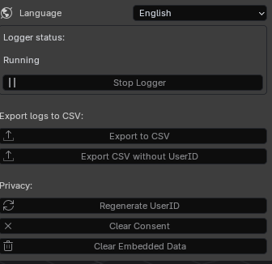
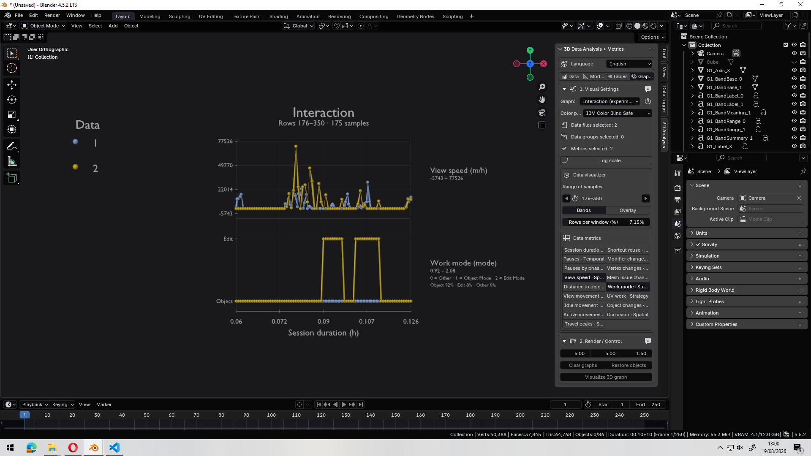
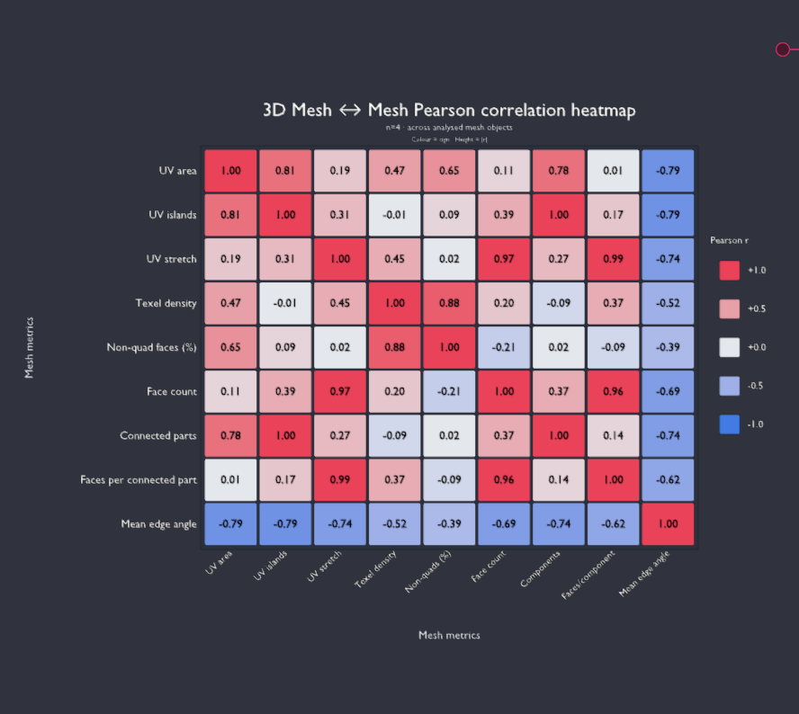

01
Registro continuo
Captura eventos y métricas sin interrumpir el trabajo dentro de Blender.
Dos complementos conectados para registrar la interacción en Blender
y transformar esos datos en métricas, tablas y visualizaciones.
Data Logger registra lo que ocurre durante la sesión. Analysis 3D organiza y explora esa información para facilitar su estudio.
Los dos complementos se integran en un flujo sencillo: Data Logger registra la interacción mientras trabajas y Analysis 3D permite estudiar después la información recopilada.


Captura eventos y métricas sin interrumpir el trabajo dentro de Blender.

Convierte los registros en métricas, tablas y gráficos fáciles de explorar.
Registra de forma estructurada la interacción del usuario con la escena y los objetos de Blender durante una sesión de trabajo.
Importa y estudia los registros generados para convertirlos en información visual y métricas útiles dentro del propio flujo de trabajo.
El registro y el análisis están separados para que cada herramienta tenga una función clara.
El usuario interactúa normalmente con la escena y sus objetos.
Las acciones y métricas de la sesión quedan almacenadas de forma estructurada.
Los datos se convierten en tablas, métricas y gráficos para su estudio.
Registros preparados para su revisión, tratamiento y comparación entre sesiones.
Relaciona métricas de interacción con objetos, mallas y estados de edición.
Convierte los datos registrados en tablas y gráficos más fáciles de interpretar.
Permite estudiar cambios relevantes vinculados al trabajo de edición de modelos.
La interfaz de Analysis 3D está preparada para mantener y actualizar ambos idiomas.
Captura y análisis permanecen desacoplados, pero forman un flujo de trabajo común.
Para completar el flujo de captura y análisis se utilizan Data Logger y Analysis 3D.
Distribuido bajo licencia de código abierto.
Responsable de ideas
Desarrolla y transforma ideas en soluciones funcionales, combinando creatividad, tecnología y análisis. Participa en el diseño y evolución de herramientas orientadas a mejorar la experiencia y el análisis en entornos 3D.
Desarrollo
Desarrolla e implementa las funcionalidades técnicas del proyecto, convirtiendo los requisitos en herramientas robustas y funcionales. Se encarga de la programación de los complementos.